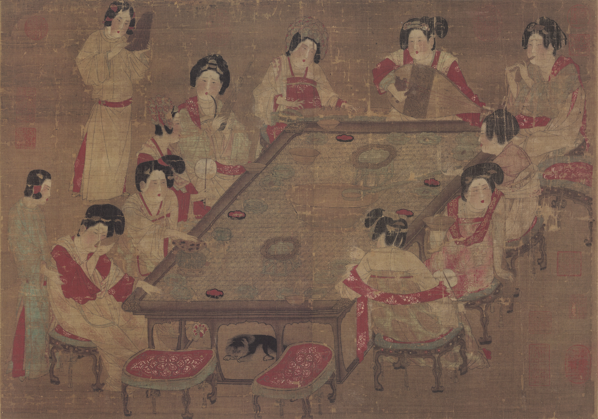
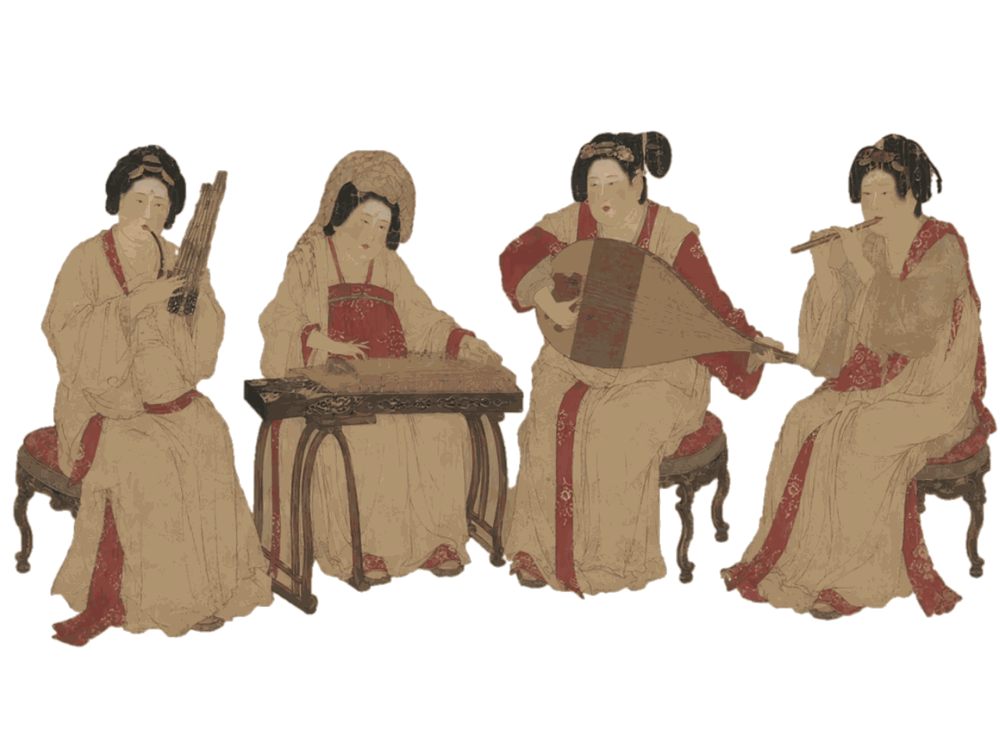
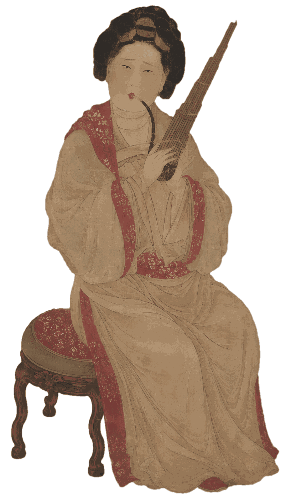
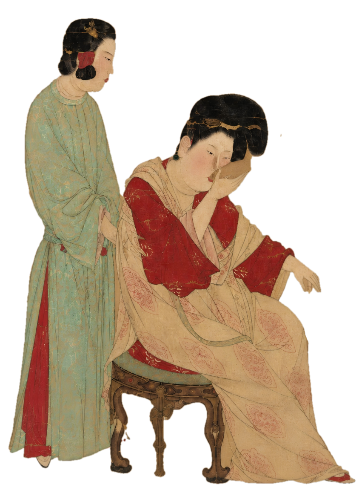

Instruments in Famous Paintings
名画中的乐器

四乐并陈，宴中成韵
画面上方四位宫女正在演奏乐器，自右向左依次为胡笳、琵琶、古筝与笙，形成吹奏与弹拨相结合的宫廷乐队。旁侧侍女中还有一人手执拍板击节相和，丰富了画面的音乐氛围，也展现出唐代宫廷宴饮中乐舞相伴的生活场景。


笙簧清响，凤音入画
笙位于画面左侧奏乐人物手中。持笙宫女侧身而坐，双手扶持笙斗与笙苗，口含吹嘴，呈现吹奏姿态。笙由多根笙苗与笙斗组成，音色清亮，常用于雅乐、燕乐与宫廷宴乐之中。在此画中，笙与胡笳、琵琶、古筝并置，既表现了唐代宴乐的多元音色，也强化了画面清雅、闲适的宫廷气氛。
